工程示例¶
SDI-12土壤温湿度传感器¶
通过基站式智能数据采集仪连接SDI-12土壤温湿度传感器，采集传感器数据并解析，通过上位机执行测试脚本显示出具体温度等信息。
传感器参考¶
连接参考¶
将SDI-12土壤温湿度传感器红色端连接基站式智能数据采集仪PWR端子、白色端连接GND端子、蓝色端连接SDI12-1或者SDI12-2端子。
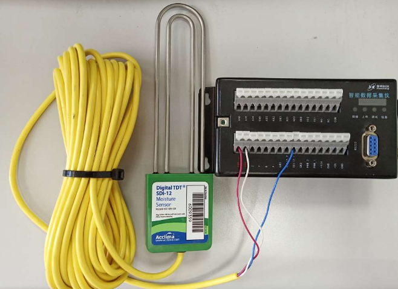参考连接
脚本参考¶
执行log¶
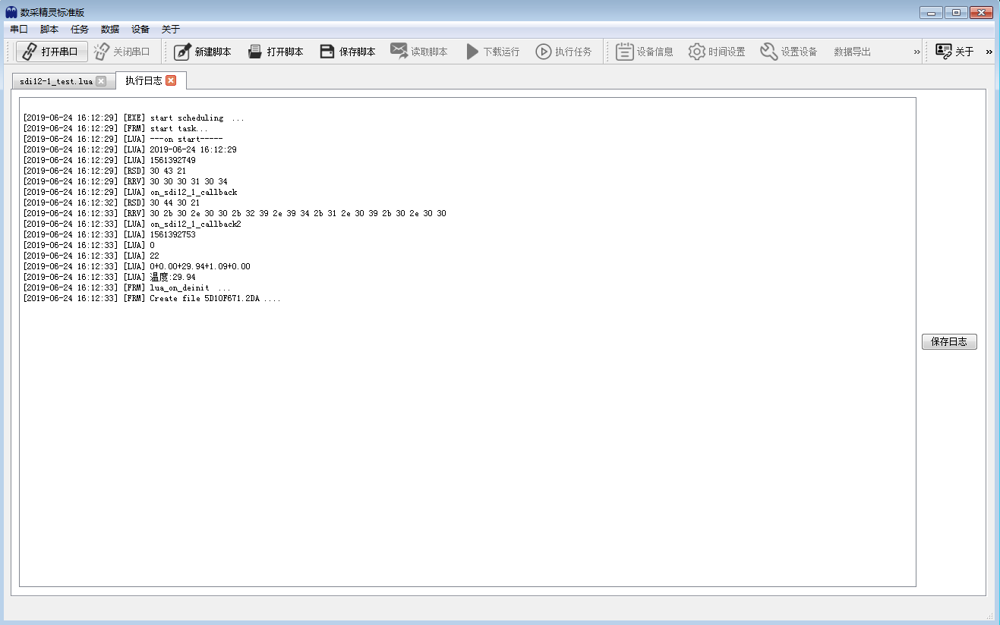
Pt100三线铂电阻¶
测量3线铂电阻的真实阻值。
传感器参考¶
连接参考¶
Pt100铂电阻引出三线，Pt100接线时电流回路的参考和电压测量回路的参考为一条线（即检测设备的I-端子和V-端子短接）。
注解
蓝色线连接通道对应脚本函数
pt100_3wire_get第一个参数。红色线之一必须连接于AD2或AD3端子，并且pt100_3wire_get第三个参数必须为AD2或AD3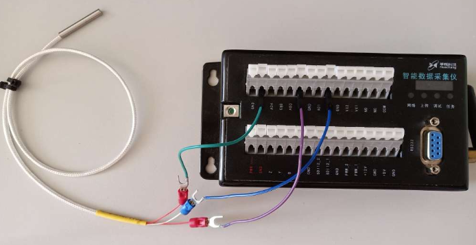参考连接
脚本参考¶
执行log¶
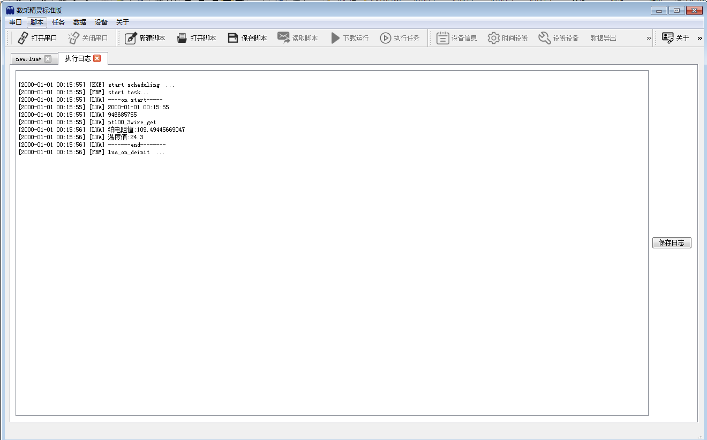
注解
四线PT100热电阻传感器，蓝色端子对应 pt100_4wire_get 的第1和第2参数，红色端子对应与第3和第4参数。
并且，第4参数通道必须为 AD2 或 AD3 之一。
Modbus温湿度变送器¶
通过基站式智能数据采集仪连接485温湿度变送器，采集传感器数据并解析，通过上位机执行测试脚本显示出空气中温度值和湿度值
传感器参考¶
连接参考¶
485温湿度变送器红色线接PWR端子、黑色线接GND端子，将基站式智能数据采集仪AY、BZ端子短接后，将485温湿度变送器黄色线接到基站式智能数据采集仪A端子处、白色线接在B端子处。
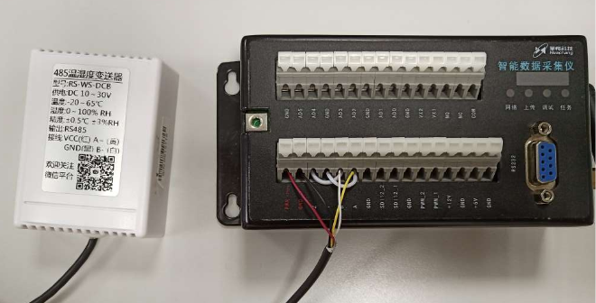参考连接
脚本参考¶
执行log¶
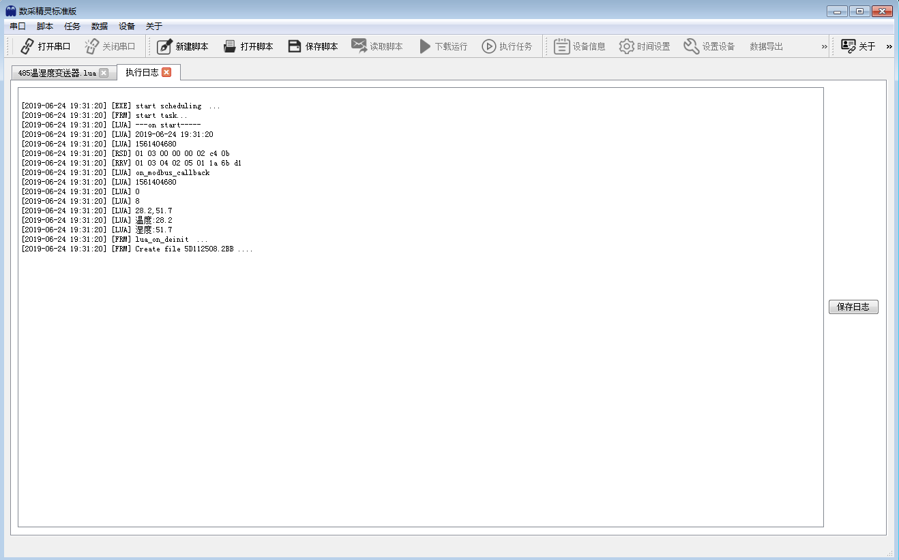
PWM雨量传感器¶
通过基站式智能数据采集仪连接485温湿度变送器，采集传感器数据并解析，通过上位机执行测试脚本显示出空气中温度值和湿度值
连接参考¶
雨量传感器NO端接基站式智能数据采集仪PWM_1端子处、 NC端接GND端子、 负端接GND端子、正端接PWR端子。拨码开关如下
b1 b2 b3 b4 x x 1 1 脉冲输出模式 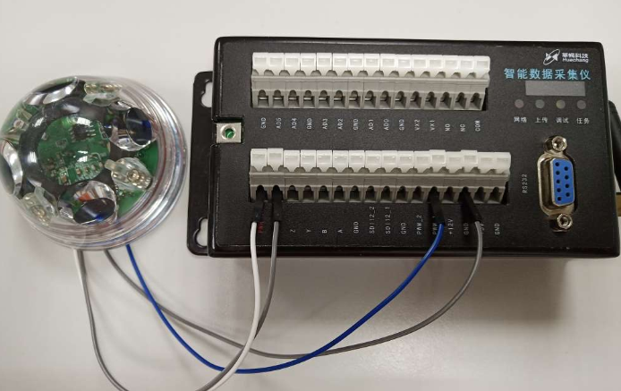参考连接
脚本参考¶
执行log¶
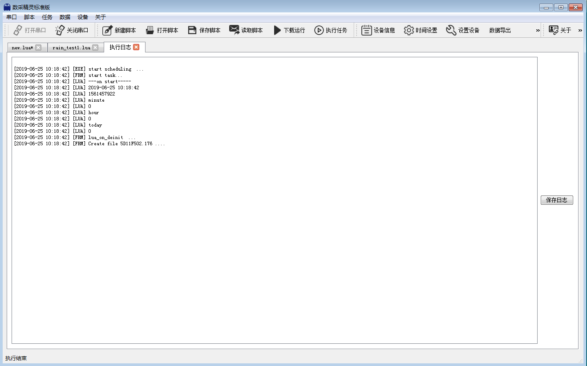
4-20mA光照度变送器¶
变送器是一款光精度感光变送器，输出数值计量单位为 Lux,设备采用壁挂防水外壳， 壁挂式安装，防护等级高。4-20mA/0-10V/0-5V 多种模拟量输出信号可选，产品供电为 10-30V 宽电压供电
连接参考¶
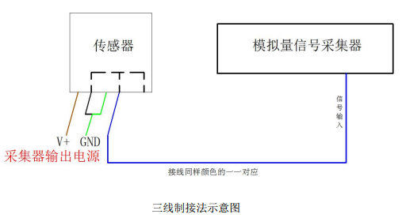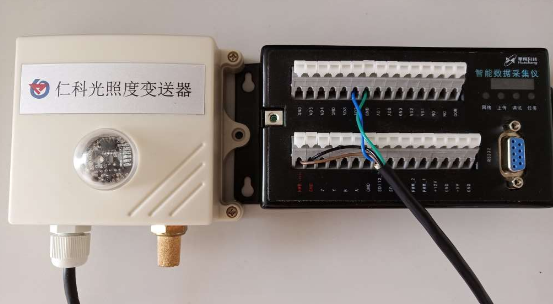参考连接
脚本参考¶
执行log¶
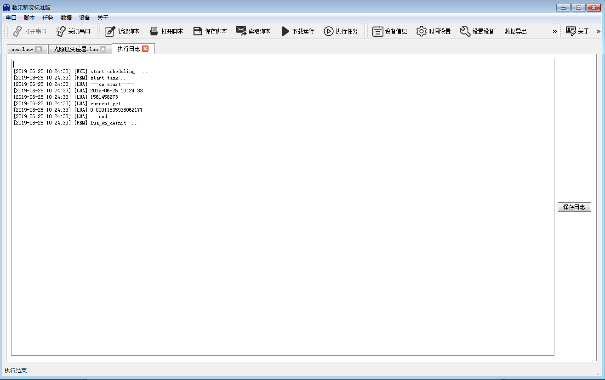
电压测量 干电池¶
输出干电池电压值
传感器参考¶
无
连接参考¶
将南孚电池正端与基站式智能采集仪AD5通道号相连，负端接GND端子。
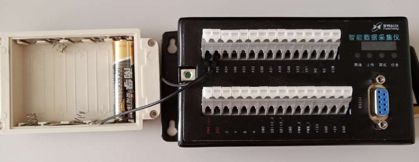参考连接
脚本参考¶
执行log¶
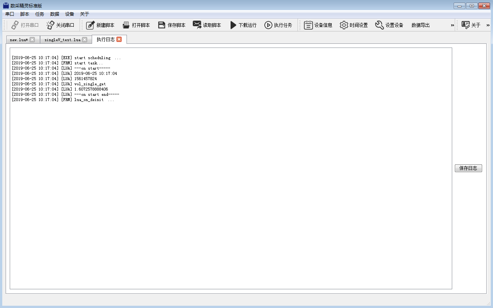